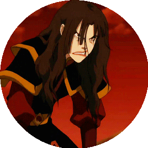
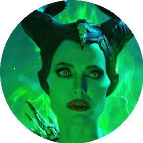
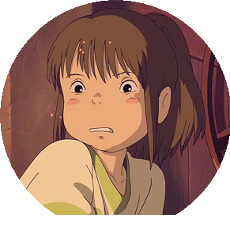

Women In Media!

Possibly one of the greatest villains of all time, Azula from Avatar the Last Airbender shows exactly how to portray a female villain. Long gone are the black high heels and red lipstick. Instead, Azula is just a girl, who has parents who pressure her too much. She is not pretty when she cries and screams, she's scary and broken. She doesn’t seduce or tease, she burns and screams. She is truly mad, and that’s real. Azula is insecure, angry, upset, in grief, and it’s all out in the open. Girls are allowed to be ugly, thank you Azula, for letting me be ugly.

Originally known as Disney’s worst villain, Maleficent finally got her time to share her side of the story in her titular movie in 2014. In this movie, Maleficent becomes more than a villain, she becomes a human. Maleficent not only challenges her ex lover who betrayed her, but she challenges an entire kingdom. The movie ends with her giving the princess true loves kiss, instead of a male savior. It is the mother's love that saves the girl; not romantic. The bond between mother and daughter being the prevalent theme is groundbreaking. Maleficent has done bad things, but she’s also done good things. Moreover, the intention behind the evil actions weren’t always plainly evil. This movie gives Maleficent depth, and as Disney’s biggest villain, its the least she deserves! Female characters are allowed to be evil, and they are allowed to be sympathetic at the same time. Maleficent does an incredible job of battling black and white, and finally becoming gray..

From one of the most influential anime movies of all time, comes the main protagonist, Chihiro. She leads the movie Spirited Away, a film about the rite of passage into adulthood. Chihiro is a great example of what a dynamic young woman acts like. She’s kind, whiny, emotional, courageous, harsh, hardworking and brilliant! Her character shows that women are not as simple as good and bad. That little girls are not dramatic and “sissy”. The concept of manhood is deemed as an important part of a boy’s life, but what about becoming a woman? The absence of a male savior in this film is refreshing, and although there is a romance, it does not consume her character. Spirited Away not only won an Oscar for best animated film in 2001, but is also the highest grossing film in Japanese history. Chihiro is proof that audiences want to watch our stories, if you give us the chance to tell it.